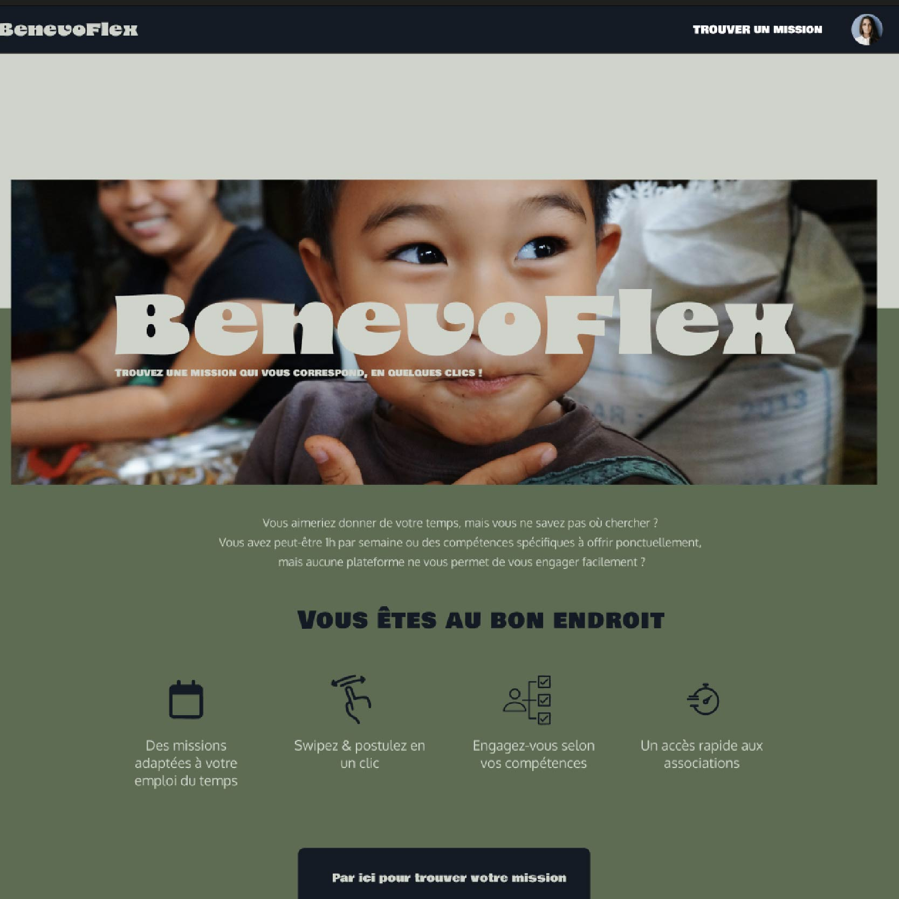

BenevoFlex – Plateforme de mise en relation entre bénévoles et associations
BenevoFlex est une application web développée dans le cadre de mon projet de fin de formation chez Le Wagon. L’objectif : simplifier l’engagement bénévole en facilitant la mise en relation entre personnes volontaires et associations selon leurs besoins et disponibilités. Pensée comme un “Tinder du bénévolat”, la plateforme permet : Aux bénévoles de renseigner leurs compétences, envies et créneaux disponibles. Aux associations de publier des missions précises et ciblées. Grâce à un système de matching simple et intuitif, BenevoFlex favorise une rencontre efficace entre offre et demande de solidarité.
